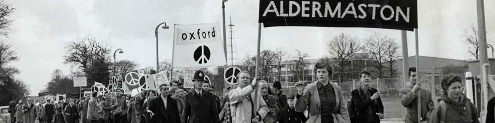

1. Jim Lindberg, 1999. Greed, Straight Ahead. Pennywise, Epitaph Records
Society, We all know there's something wrong and we know it all along. Sincerity, You may think there's no one else till they put you on a shelf. Society, Pay your taxes stand in line help them plan for your demise. Society, Crush the weak to get your share cause nobody's playing fair.1
Those were the words that I was shouting along with my fist, high up the air, amongst hundreds of other people during a Pennywise (Californian punk-rock band) show in 2014. Punk-rock was introduced to me as a tool to release refurbished energy and it gave me enormous amounts of adrenaline in return. One could say, that it gave me the urge to do something with that adrenaline but I was not sure what it was exactly. Back then I was easily influenced by the fast songs and explosive guitar and bass riffs, although I never actually listened to the expressive lyrics that were being sung. The moment I started paying attention to what was being said and discovered that there was an underlying message in those songs, was the moment that I realised that punk-rock was not just about playing fast three-chord songs and an act of rebellion. It was a collective that strived for justice and equality. A collective that consists of people who played in bands, people that worked at record studios recording the songs of the bands, people that worked at record labels who sold the recorded songs of bands, people that owned and worked at venues that provided a space for bands and their audience to connect.
Without any doubt I can tell that I felt strong and powerful during that concert in 2014, by the idea that I was being part of something that was bigger than myself or any other individual. I was part of a group. A group consisting of people who are all different on one hand but on the other hand they all have something in common: the reason to believe that political agendas and fascist societies can be changed. Changed by groups of people who are tired of being pushed around by others, tired of other people telling them what to do, how they should do it, or even better; telling them what they can not do. And how do they convey others that they want change? They rise up, they gather and together they form a bigger whole and that is how a movement is born. That is also the reason why I see punk-rock not only as a music genre, I see punk-rock as a movement.
Not so long ago, while cycling to school I witnessed a big protest march against police violence through the streets of The Hague. I was fascinated by seeing so many individuals working together to express their frustration in a nonviolent way, that it reminded me of that concert in 2014 where I was also feeling stronger by being surrounded by people who are having a common believe. Being part of a movement one needs to have the confidence and willingness to stand up and let others hear their voice. It is not about someone being right, it is about someone voicing an opinion that is not being heard and asking for a dialog.
Nowadays, with many political events that include injustice and fascism happening all around the world, the numbers of movements (or members of already existing movements) are growing fast. Where are we standing as educated political designers in this matter, and how do we react on it? The aesthetics and agendas of 70’s and 80’s punk-rock movement were striking and provocative, not only nation wide but globally. Still nowadays the visual communication of the punk-rock movement is considered to be striking. Around me I noticed that a lot of techniques and tactics, that were used to distribute the anti-fascist ideologies, are being used in contemporary graphic design practices. What were this specific tactics and methods that made the face of punk-rock so provocative and are those tactics and methods still relevant in contemporary provocative and activist design projects?
Although the revolutionary and provocative aspect of contemporary design projects appears to be a development of the 21st century, its methods and techniques are actually an aftermath of the 70’s/80’s punk-rock movement. With projects all around the world that strive for a good cause and equal rights, designers use methods that are circulating for years. The ever growing popularity of the internet, make those methods easily shared and developed for further provocation. Which is needed, because one can see the western society moving towards the radical right wing. People are starting to not look further than their own standards, and consider standards from non western countries as ‘not normal’. Therefore I believe that it is a necessity that society needs constant reflections to keep itself critical and smart. This reflection can be provided by many people, however artists and designers have the ability to show new perspectives in visual ways that would occur to be shocking, but striking and therefore, mind changing. The punk-rock movement was being provocative with their agendas and visuals, and under the guise of never change a winning team, I believe that contemporary activist and provocative design projects use the methods and techniques from the punk-rock movement very consciously.
What is a movement?
2. Derek Sivers, 2010. How to Start a Movement, TED Talks. h t t p s : / / w w w . t e d . c o m / t a l k s / d e r e k _ s i v e r s _ h o w _ t o _ s t a r t _ a _ m o v e m e n t ?
3. Alma Escamilla-Anguiano, 2016. Sociology 1301 Final Exam Flash Cards. h t t p s : / / q u i z l e t . c o m / 1 2 4 1 1 4 7 7 / s o c i o l o g y - 1 3 0 1 - f i n a l - e x a m - f l a s h - c a r d s /
4. Cyrus Ernesto Zirakzadeh, 2011. Social and Political Movements. Sage Publications Ltd
A movement can be subdivided into three categories, which are Political, Social and Artistic. According to, writer, entrepreneur and avid student of life (as he explains himself), Derek Sivers a movement starts with a leader who is standing up and addresses an issue that to him or her is important for others to be aware of. The turning point is when the first follower shows up and joins the leader. This has to happen in a public space and should be seen by everyone, because the core of a movement is that they have to be visible. By joining the leader as the first follower it will indicate that it is rather easy to join a group for future followers and soon others will join. When that happens a movement is born.2 When two or more people who interact with each other, have a common belief and collectively stand united, one can consider this to be a so called social group.3 When this group works together and strives to obtain a political goal one can call this a political movement. The difference between a social and a political movement is, according to Cyrus Ernesto Zirakzadeh, that social movements refers to purposeful undertakings by people who do not hold positions of authority or wealth, but who wish to redirect their society towards new goals and values by bypassing or defying those in power.4 And political movements have the exact same actions, but the goals that a political party is striving for, requires legislation to actually make the change happen.
Political Movement
5. Swann Jr, William B. 2015. Identity Fusion. Current Directions in Psychological Science. h t t p : / / j o u r n a l s . s a g e p u b . c o m / d o i / 1 0 . 1 1 7 7 / 0 9 6 3 7 2 1 4 1 4 5 5 1 3 6 3
6. Charles Tilly, 2004. Social movements, 1768-2004. Paradigm Publishers
7. James T. Patterson, 1996. Grand Expectations: The United States 1945–1974. Oxford University Press
8. History.com Staff, 2009. Civil Rights Movement. A+E Networks. h t t p : / / w w w . h i s t o r y . c o m / t o p i c s / b l a c k - h i s t o r y / c i v i l - r i g h t s - m o v e m e n t
9. Ryan Struyk, CNN, 2017. Blacks and whites see racism in the United States very, very differently. h t t p : / / e d i t i o n . c n n . c o m / 2 0 1 7 / 0 8 / 1 6 / p o l i t i c s / b l a c k s - w h i t e - r a c i s m - u n i t e d - s t a t e s - p o l l s / i n d e x . h t m l
For a movement to achieve their goal or to state their opinion a well coordinated group action takes place. This group action consists most of the time a situation where people from agencies take action at the same time since they realize that to achieve their goal, acting together is a necessity rather than acting individually. Group action is more likely to occur when the individuals within the group feel a sense of unity with the group, even in personally costly actions.5 This kind of movement is called a social movement. A sociologist called Charles Tilly deconstructs social movements into three parts: contentious performances, displays and campaigns where the followers of the movement make collective claims on others.6
One of the most famous examples of a non-violent intended social movement which transformed to a political movement was the African-American Civil Rights Movement in 1968 started, coordinated and executed by Dr. Martin Luther King Jr. The whole Civil Rights Movement helped put civil rights at the top of the agenda of reformers in the United States.7
Civil rights protesters meet the National Guard at the home of the Memphis Blues, 1968, Unknown photographer
The Civil Rights Movement consists of multiple groups and movements who all strived for a common goal which was to end racial segregation and discrimination. For years Afro-American citizens were treated unequally and for years they were fighting for equal rights, although they were fighting for so long it was the 1950’s when the bubble bursted. All kinds of groups and organisations called on their members to rise up and take action. The word was quickly spread through churches and brotherhoods which had a lot of power in that time within the movement. They asked their members and followers that it was enough and that everyone should express their dissatisfaction. This resulted in non-violent intended protests which included boycotting public places and public transport. The later on called leader of the movement was Martin Luther King, Jr. He was the one who dared to take the first step to show his followers that if he could do it everyone else could do so as well. For approximately thirteen years the movement was organizing actions throughout the whole country to finally receive a change in the American agenda.8
One would think that when a movement fights for thirteen years and succeeded to change a country’s agenda, the problem would be solved and it would not occur again. Wrong. Fifty years later, same country, same problem, is history repeating itself? Since the arrival of Donald Trump in the oval office, racial injustice climbed its way up very fast according to more that six out of 10 Americans according to a Quinnipiac University poll which took place in March 2017.9

Social Movement
With the rise of racism and fascism in the Western world, Movements are on the rise and one specific contemporary movement looks a lot like the Civil Rights Movement of 1968, the Black Lives Matter Movement. The movement is among others established in 2013 by Alicia Garza. #BlackLivesMatter, is an online platform developed after the murder of Trayvon Martin, designed to connect people interested in learning more about and fighting back against anti-black racism. To be more specific, Garza explains the Black Lives Matter movement as an intervention which is driven by ideologies in a political sense. This intervention is highly needed because we still live in a world where black lives are being seen as a minority. Made as a minority intentionally by the society’s system. It is an conformation that black folk’s play their part in society, also deserve the same humanity as everyone else does and show their power in the face of those who are against them. The movement was strengthened by cultural workers, artists and designers who wanted to lift the movement to a higher state of just a social media platform, it was they who wanted to bring the movement to the streets. Garza, together with Opal and Patrisse, created the main infrastructure for this movement. In no time they developed a big team which was led en designed by Patrisse Cullors and Darnell L. Moore. They hosted conferences on a national scale where they focused on the crucial issues within the frame of the importance of black people that are working extremely hard to simple just be accepted in society. Because of those conferences, a huge network was created across the country where groups of people joined forces to end the fascist injustice that was laid upon the now still minority. The movement created a place where people could celebrate their humanization.
As Garza explained what the ideologies of the movement are she also mentioned that artist and designers played a role in this movement. And as I search on Google with the tagline Black Lives Matter Movement Google suggests that I should look for Black Lives Matter Art and as I look at the images of the Black Lives Matter protests I notice that there is unity. Not only unity in a social sense, but unity in the design of the tools that are equipped by the protesters. The colors black and yellow are utter dominant alongside the full capital characters typography which is displayed on banners, protest signs, shirts, scarves and even on the official website of the movement.
Most signs and banners of the movement are made with a black background and yellow or white typography on top of it. The usage of full capital characters stands in an unofficial way for a call for attention as if one would be screaming. Within the spectrum of colors, the color yellow is the most luminous of them all. In the whole world the colors yellow stands for caution as it is being used for instance on danger signs, nevertheless the color yellow also stands for enlightenment.
The meaning of the color black differs per culture on how it is seen, as in most Western countries the color black stands for death. Depending in what context the color is used the meaning changes, and in the case of a protest, I see the color black, especially used on banners or flags, as the opposite of a white flag. As a white flag stands for surrender and holding back, the black flag stands for the opposite, no surrender, defiance and anarchism. All this is already sending an indirect message without any context, and by adding context provocative layers are created and gives the movement stability and a face. The design for the Black Lives Matter movement is provided by a group called Design Action Collective and they only provide graphic design and visual communications for progressive, non-profit, and social change organizations. They are the brain behind the graphics of the movement. Within three days the Design Action Collective created a wordmark as logo using the font Anton which is similar to the font Impact although Anton is an open source, free, online font. In an online article they describe the logo as bold, strong, militant, and carries strength and tone. Being easily replicable was the main goal since we know within movements people don’t have budgets to do professional printers–they’re hand painting logos, and the level of skill to replicate a logo by hand varies. We wanted to make something that people could pick up and use in myriad ways. This project shows that a DIY (Do It Yourself) technique and method can be used to bring unity within the identity of a movement when organized properly.
Art Movement
Movements are not only found in political or social fields. A scene where movements also commonly occur is the art scene. Most well known art movements arose during the 19th and 20th century, such as Expressionism (1890–1930) and Dadaism (1916–1922).
Within the field of expressionism the perception of reality is not of importance, but what matters are the inner emotions and expressive feelings of the artist which he or she projects on the works of art. Expressionist artworks often blur the border between what is real and what is not, and therefore it creates a fresh new canvas where unknown forms and colors can be shaped and developed, there are no imposed rules for the expressionist artist. An artwork, where that blurred line is very visible and shows the expression of the artist is the artwork named Lyrisches by Vasili Vasileevich Kandinsky. In the painting an abstract and minimal indication of a horse and his rider, who sprint through a colorful landscape of unknown shapes are visible. Kandinsky wanted to merge intellect and emotion with the usage of form, line and color and free the objects in the painting from their objective gesture. By doing so Kandinsky becomes the founder of the abstract arts. And because of that the Lyrisches to me is the perfect artwork that represents expressionism in its purest form.
During the first world war a small cultural movement arose in neutral Switzerland which is known as dadaism. The movement was a collective of artists, writers, performers and designers that aimed to radically return to their childlike creativity and that included making artworks that went against the grain of traditional art. A lot of childish humour was also a prominent aspect within dadaism, which is clearly visible in the work of Marcel Duchamp from 1919 called L.H.O.O.Q. and it shows us a reproduction of Leonardo Da Vinci’s Mona-Lisa with a moustache and goatee. The name L.H.O.O.Q. is a pun where the letters, if pronounced in French, sound like Elle a chaud au cul (She is hot in the arse) which is an expression implying that a woman has sexual restlessness. This sums up the intention of dadaism quite well.


 Civil rights protesters meet the National Guard at the home of the Memphis Blues, 1968, Unknown photographer
Civil rights protesters meet the National Guard at the home of the Memphis Blues, 1968, Unknown photographer
 Most signs and banners of the movement are made with a black background and yellow or white typography on top of it. The usage of full capital characters stands in an unofficial way for a call for attention as if one would be screaming. Within the spectrum of colors, the color yellow is the most luminous of them all. In the whole world the colors yellow stands for caution as it is being used for instance on danger signs, nevertheless the color yellow also stands for enlightenment.
Most signs and banners of the movement are made with a black background and yellow or white typography on top of it. The usage of full capital characters stands in an unofficial way for a call for attention as if one would be screaming. Within the spectrum of colors, the color yellow is the most luminous of them all. In the whole world the colors yellow stands for caution as it is being used for instance on danger signs, nevertheless the color yellow also stands for enlightenment.